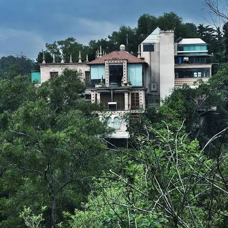

[Espacio vacío para Publicidad]
Bienvenido al lugar donde las pesadillas cobran vida y las leyendas urbanas se vuelven realidad.
Si eres de los que disfruta sentir un escalofrío recorriendo su espalda a mitad de la noche, has llegado al sitio correcto. En esta página nos dedicamos a recopilar las historias de terror más perturbadoras, relatos basados en hechos reales y mitos oscuros que la gente prefiere solo contar en susurros. Desde casas abandonadas con pasados siniestros hasta encuentros con lo inexplicable en medio de carreteras desiertas.
Cada semana actualizamos nuestro contenido con nuevas crónicas enviadas por nuestros propios lectores. Te invitamos a apagar las luces, ponerte cómodo y sumergirte en los misterios que se ocultan en la oscuridad. Pero cuidado... una vez que empiezas a leer, es posible que comiences a escuchar ruidos extraños a tu alrededor.
Existen caminos que es mejor no cruzar cuando la medianoche se avecina...
Carlos manejaba de regreso a casa por una carretera completamente oscura y rodeada de árboles. Era casi la madrugada y el cansancio empezaba a ganarle, cuando los faros de su auto iluminaron una silueta a lo lejos. Al acercarse, vio que se trataba de una mujer joven que vestía un vestido blanco, parada sola a la orilla del camino bajo la intensa neblina. Por instinto, Carlos frenó y bajó la ventanilla para ofrecerle ayuda.
La mujer, con la mirada fija en el suelo y una voz sumamente apagada, le pidió si podía llevarla al pueblo más cercano. Él aceptó de inmediato. Ella subió en silencio y se acomodó en el asiento trasero. Durante varios kilómetros, el ambiente dentro del coche se volvió increíblemente frío, tanto que el aliento de Carlos comenzó a congelarse, pero atribuyó el clima a la noche. La misteriosa mujer no pronunció una sola palabra, limitándose a mirar por la ventana con una profunda tristeza.
De pronto, al acercarse a una curva muy cerrada y peligrosa, la mujer habló con un susurro escalofriante: "Ten cuidado... en esta misma curva me maté yo hace exactamente cinco años". Asustado, Carlos miró rápidamente por el espejo retrovisor para ver si era una broma, pero el asiento trasero estaba completamente vacío. Al volver la vista al frente, el terror lo paralizó: la misma mujer del vestido blanco estaba parada a mitad de la carretera, sonriendo rígidamente mientras apuntaba hacia el barranco.
Cuentan que en una pequeña casa a las afueras de la ciudad, los nuevos inquilinos encontraron un viejo espejo empotrado en la pared del pasillo principal. Al principio parecía un mueble común y corriente, un poco desgastado por el tiempo. Sin embargo, las cosas cambiaron durante la primera tormenta eléctrica de la temporada.
El dueño de la casa caminaba hacia la cocina a las tres de la mañana cuando un relámpago iluminó el pasillo. Al pasar junto al cristal, notó algo extraño: su reflejo en el espejo no se movía al mismo tiempo que él. Se quedó congelado. La figura dentro del vidrio permanecía de pie, completamente inmóvil, mirándolo fijamente con una sonrisa que se estiraba de oreja a oreja, mientras levantaba lentamente una mano para saludarlo desde el otro lado.

[Espacio vacío para Noticias]